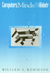
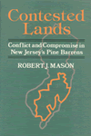
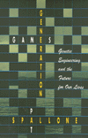
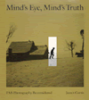
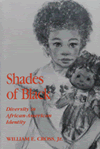

|
|
African-American
Reflections on Brazil's Racial Paradise
Hellwig, David J. Essays that focus on the authors' observations
of race relations in Brazil from the first decade of the century
through the 1980s
276 pp • 5.5x8.25 • Spring 1992
cloth 0-87722-892-2
EAN 978-0-87722-892-9
|
|
|
Atheism
A Philosophical Justification
Martin, Michael Logical reasons for being an atheist
New in Paperback!
254 pp • 6x9 • Fall 1989
paper 0-87722-943-0
EAN 978-0-87722-943-8
|
|
|
Beyond
Employment
Time, Work, and the Informal Economy
Offe, Claus, Rolf G. Heinze, and Alan Braley An analysis
of the debate surrounding the future of "waged work" and
the growth of an informal economy
248 pp • 6x9 • Spring 1992
cloth 0-87722-951-1
EAN 978-0-87722-951-3
|
|
|
Beyond
the City Limits
Urban Policy and Economics Restructuring in Comparative Perspective
Logan, John R., and Todd Swanstrom, eds. Challenging the
notion that there is a single, global process of economic restructuring
to which cities must submit
New in Paperback!
288 pp • Fall 1990
paper 0-87722-944-9
EAN 978-0-87722-944-5
|
|
|
Black
Power Ideologies
An Essay in African American Political Thought
McCartney, John T. Tracing the course of Black Power Movements
from the 18th century to the present
264 pp • 6x9 • Spring 1992
cloth 0-87722-914-7
EAN 978-0-87722-914-8
|
|
|
Cane
Fires
The Anti-Japanese Movement in Hawaii, 1865-1945
Okihiro, Gary Y. A history of a systematic anti-Japanese
movement in Hawaii from the time migrant workers were brought to
the sugar cane fields until the end of World War II
New in Paperback!
360 pp • Spring 1991
paper 0-87722-945-7
EAN 978-0-87722-945-2
|
|
|
The
Carrot or the Stick for School Desegregation Policy
Magnet Schools or Forced Busing
Rossell, Christine H. The first study comparing the long-term
effectiveness of voluntary desegregation plans with magnet programs
to mandatory reassignment plans
New in Paperback!
272 pp • Spring 1990
paper 0-87722-924-4
EAN 978-0-87722-924-7
|
|
|
Centuries
of Solace
Expressions of Maternal Grief in Popular Literature
Simonds, Wendy, and Barbara Katz Rothman The change in popular
consolation literature over two centuries
390 pp • 5.5x8.25 • Spring 1992
cloth 0-87722-931-7
EAN 978-0-87722-931-5
|
|
|
Chinatown
The Socioeconomic Potential of an Urban Enclave
Zhou, Min, and Alejandro Portes Ethnic enclaves as an alternative
means of incorporation into the larger society
316 pp • 6x9 • Spring 1992
cloth 0-87722-934-1
EAN 978-0-87722-934-6
|
|
|
The
Christ Child Goes to Court
Swanson, Wayne R. The judicial history and implications
of Lynch v. Donnelly
New in Paperback!
284 pp • Fall 1989
paper 0-87722-958-9
EAN 978-0-87722-958-2
|
| 
|
Computers,
Minds, and Robots
Robinson, William S. A philosophical discussion of Artificial
Intelligence
230 pp • 6x9 • Spring 1992
cloth 0-87722-915-5
EAN 978-0-87722-915-5
|
| 
|
Contested
Lands
Mason, Robert J. Mason explores the changing politics of
place in New Jersey's Pine Barrens
256 pp • 6x9 • Spring 1992
cloth 0-87722-925-2
EAN 978-0-87722-925-4
|
|
|
Dust
to Dust
A Doctor's View of Famine in Africa
Heiden, David An American physician and photographer narrates
his visual journey through the refugee camps of Eastern Sudan
224 pp • 7.5x10 • Spring 1992
cloth 0-87722-912-0
EAN 978-0-87722-912-4
|
|
|
Fast
Wheels, Slow Traffic
Wright, Charles L. How transport modes can be combined to
produce affordable and environmentally sound solutions
304 pp • 6x9 • Spring 1992
cloth 0-87722-911-2
EAN 978-0-87722-911-7
|
|
|
Fire
on the Earth
Anselm Kiefer and the Postmodern World
Gilmour, John C. A philosophical case study of Kiefer's
work
New in Paperback!
272 pp • Spring 1990
paper 0-87722-962-7
EAN 978-0-87722-962-9
|
|
|
Fred
Allen's Radio Comedy
Havig, Alan Tracing a career that lasted from 1912 into
the 1950s, Havig describes the "verbal slapstick" style
that was Fred Allen's hallmark and legacy to American comedy
New in Paperback!
296 pp • Fall 1990
paper 0-87722-810-8
EAN 978-0-87722-810-3
|
|
|
Gender
Politics and MTV
Voicing the Difference
Lewis, Lisa A. Challenging the idea that MTV presents only
negative and sexist images of women
New in Paperback!
300 pp • Spring 1990
paper 0-87722-942-2
EAN 978-0-87722-942-1
|
| 
|
Generation
Games
Genetic Engineering and the Future for Our Lives
Spallone, Pat A ground-breaking work in ecofeminism, biotechnology,
and social ethics
343 pp • 6x9 • Spring 1992
paper 0-87722-967-8
EAN 978-0-87722-967-4
cloth 0-87722-966-X
EAN 978-0-87722-966-7
|
|
|
The
Heidegger Case
On Philosophy and Politics
Rockmore, Tom, and Joseph Margolis, eds. An analysis of
the debate surrounding the future of "waged work" and
the growth of an informal economy
344 pp • 6x9 • Spring 1992
paper 0-87722-908-2
EAN 978-0-87722-908-7
cloth 0-87722-907-4
EAN 978-0-87722-907-0
|
| 
|
How
Holocausts Happen
The United States in Central America
Porpora, Douglas V. A powerful indictment of U.S. intervention
in Central America
New in Paperback!
232 pp • 5.5x8.25 • Fall 1990
paper 0-87722-923-6
EAN 978-0-87722-923-0
|
|
|
Impure
Thoughts
Essays on Philosophy, Feminism, and Ethics
Addelson, Kathryn Pyne Insightful explorations of moral
limits to human interactions
New in Paperback!
257 pp • 5.5x8.25 • Fall 1990
paper 0-87722-960-0
EAN 978-0-87722-960-5
|
|
|
Jookin'
The Rise of Social Dance Formations in African-American Culture
Hazzard-Gordon, Katrina The first analysis of the development
of the jook and other dance arenas in African-American culture
New in Paperback!
248 pp • Spring 1990
paper 0-87722-956-2
EAN 978-0-87722-956-8
|
|
|
Justifying
Law
The Debate over Foundations, Goals, and Methods
Belliotti, Raymond A. A critical survey of a number of philosophical
approaches to law and judicial decision-making
312 pp • 6x9 • Spring 1992
cloth 0-87722-818-3
EAN 978-0-87722-818-9
|
|
|
Latinos
and the U.S. Political System
Two-Tiered Pluralism
Hero, Rodney E. An analysis of American politics from the
vantage point of the Latino political condition
256 pp • 6x9 • Spring 1992
paper 0-87722-910-4
EAN 978-0-87722-910-0
cloth 0-87722-909-0
EAN 978-0-87722-909-4
|
|
|
Making
Ethnic Choices
California's Punjabi Mexican Americans
Leonard, Karen Isaken Defining and changing perceptions
of ethnic identity
352 pp • 6x9 • Spring 1992
cloth 0-87722-890-6
EAN 978-0-87722-890-5
|
| 
|
Mind's
Eye, Mind's Truth
FSA Photography Reconsidered
Curtis, James A thought-provoking study of how photographers
created images of the Depression that shaped the public's view
New in Paperback!
160 pp • 9x10 • Fall 1989
paper 0-87722-823-X
EAN 978-0-87722-823-3
|
|
|
Morality,
Responsibility, and the University
Studies in Academic Ethics
Cahn, Steven M. ed. Critically investigating crucial moral
issues generated by academic life
New in Paperback!
288 pp • Fall 1990
paper 0-87722-959-7
EAN 978-0-87722-959-9
|
|
|
Morals,
Reason, and Animals
Sapontzis, S. F. Criticizes the common belief that we are
entitled to exploit animals for our benefit because they are not
as rational as people
New in Paperback!
328 pp • Fall 1987
paper 0-87722-961-9
EAN 978-0-87722-961-2
|
|
|
Possibility,
Necessity, and Existence
Abbagnano and His Predecessors
Langiulli, Nino An investigation of Abbagnano's attempt
to raise possibility to a level of prime importance and his understanding
of existence
208 pp • 6x9 • Spring 1992
cloth 0-87722-921-X
EAN 978-0-87722-921-6
|
|
|
Post-Military
Society
Militarism, Demilitarization and War at the End of the Twentieth
Century
Shaw, Martin Despite the Gulf War and other regional wars,
militarism is in decisive retreat
240 pp • 6x9 • Spring 1992
paper 0-87722-941-4
EAN 978-0-87722-941-4
cloth 0-87722-940-6
EAN 978-0-87722-940-7
|
|
|
Power
and Empowerment
A Radical Theory of Participatory Democracy
Bachrach, Peter, and Aryeh Botwinick A political theory
that encourage workers to become politically active to gain participatory
rights and a means to strengthen the democratic process as a whole
216 pp • 5.5x8.25 • Spring 1992
paper 0-87722-939-2
EAN 978-0-87722-939-1
cloth 0-87722-930-9
EAN 978-0-87722-930-8
|
|
|
The
Right to Privacy
Gays, Lesbians, and the Constitution
Samar, Vincent J. Discusses the reasons why and the degree
to which privacy should be protected
New in Paperback!
260 pp • Spring 1991
paper 0-87722-952-X
EAN 978-0-87722-952-0
|
|
|
The
Rise of Historical Sociology
Smith, Dennis A much-needed survey of the spectacular growth
of interest in social history in the West
244 pp • 6x9 • Spring 1992
paper 0-87722-920-1
EAN 978-0-87722-920-9
cloth 0-87722-919-8
EAN 978-0-87722-919-3
|
|
|
Separate
Societies
Goldsmith, William W., Edward J. Blakely, and Harvey Gantt
An examination of the presence and persistence of urban poverty
and the dilemmas of local reform
280 pp • 5.5x8.25 • Spring 1992
paper 0-87722-933-3
EAN 978-0-87722-933-9
cloth 0-87722-932-5
EAN 978-0-87722-932-2
|
| 
|
Shades
of Black
Diversity in African American Identity
Cross, Jr., William E. Presents the diversity that has always
been the hallmark of Black psychology, exploding the myth that self-hatred
is the dominant theme in Black identity
New in Paperback!
296 pp • Spring 1991
paper 0-87722-949-X
EAN 978-0-87722-949-0
|
|
|
The
Social Origins of Democratic Socialism in Jamaica
Keith, Nelson W., and Novella Z. Keith Challenging current
interpretations of Jamaican events and politics
352 pp • 6x9 • Spring 1992
cloth 0-87722-906-6
EAN 978-0-87722-906-3
|
| 
|
Society
and Nature
Towards a Green Social Theory
Dickens, Peter A critical examination of historical and
contemporary sociological treatments of relationships between society
and nature
300 pp • 6x9 • Spring 1992
paper 0-87722-969-4
EAN 978-0-87722-969-8
cloth 0-87722-968-6
EAN 978-0-87722-968-1
|
|
|
The
Solicitor General
The Politics of Law
Salokar, Rebecca Mae Showing that increased politicization
of the Justice Department makes the work of the nation's lawyer
an integral component of executive policy-making
250 pp • 6x9 • Spring 1992
cloth 0-87722-926-0
EAN 978-0-87722-926-1
|
|
|
Technological
Change and Co-Determination in Sweden
Sandberg, Åke, Gunnar Broms, Arne Grip, Lars Sundstrom, Jesper Steen,
Peter Ullmark, and Andrew Martin Examining how labor unions
and corporations negotiate and cooperate on job design and computerization
and technological change in the workplace
360 pp • 6x9 • Spring 1992
cloth 0-87722-918-X
EAN 978-0-87722-918-6
|
|
|
The
Underclass Question
Lawson, Bill E., ed. African American philosophers discuss
"underclass"
232 pp • 6x9 • Spring 1992
paper 1-56639-062-1
EAN 978-1-56639-062-0
cloth 0-87722-922-8
EAN 978-0-87722-922-3
|
|
|
V.
F. Calverton
Radical in the American Grain
Wilcox, Leonard The passionate career of one of the Old
Left's most influential spokesmen
311 pp • 6x9 • Spring 1992
cloth 0-87722-929-5
EAN 978-0-87722-929-2
|
|
|
Walk
the Walk and Talk the Talk
An Ethnography of a Drug Abuse Treatment Facility
Skoll, Geoffrey R. Contradictions in philosophy and practice
in a residential drug abuse treatment facility
224 pp • 5.5x8.25 • Spring 1992
cloth 0-87722-917-1
EAN 978-0-87722-917-9
|
|
|
West
African Pop Roots
Collins, John "...the nearest thing we have in the twentieth
century to a global folk music."
382 pp • 6x9 • Spring 1992
paper 0-87722-916-3
EAN 978-0-87722-916-2
cloth 0-87722-793-4
EAN 978-0-87722-793-9
|
|
|
Who
Cares for the Elderly?
Public Policy and the Experiences of Adult Daughters
Abel, Emily K. The eploration of family care for disabled
elderly people
New in Paperback!
248 pp • 6x9 • Spring 1991
paper 0-87722-950-3
EAN 978-0-87722-950-6
|
|
|
Work
and Democracy in Socialist Cuba
Fuller, Linda A comparison of the expansion of workers'
control after 1970 with the situation in the 1960s
311 pp • 6x9 • Spring 1992
cloth 0-87722-893-0
EAN 978-0-87722-893-6
|
|
|
Work,
Inc.
A Philosophical Inquiry
Byrne, Edmund F. Examining legal and philosophical problems
for a new social contract that is fair to workers
New in Paperback!
360 pp • Spring 1990
paper 0-87722-957-0
EAN 978-0-87722-957-5
|